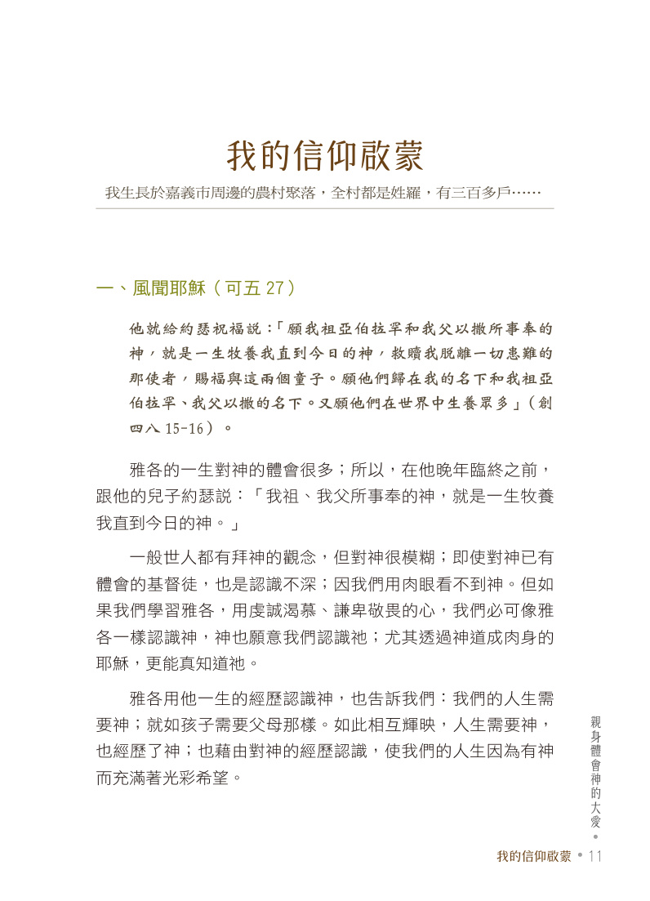
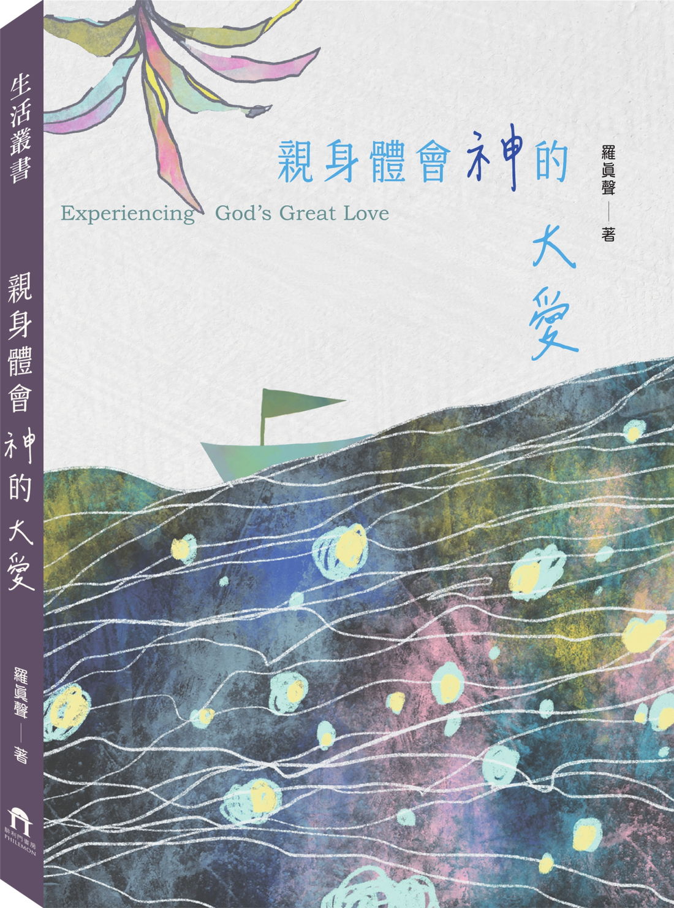
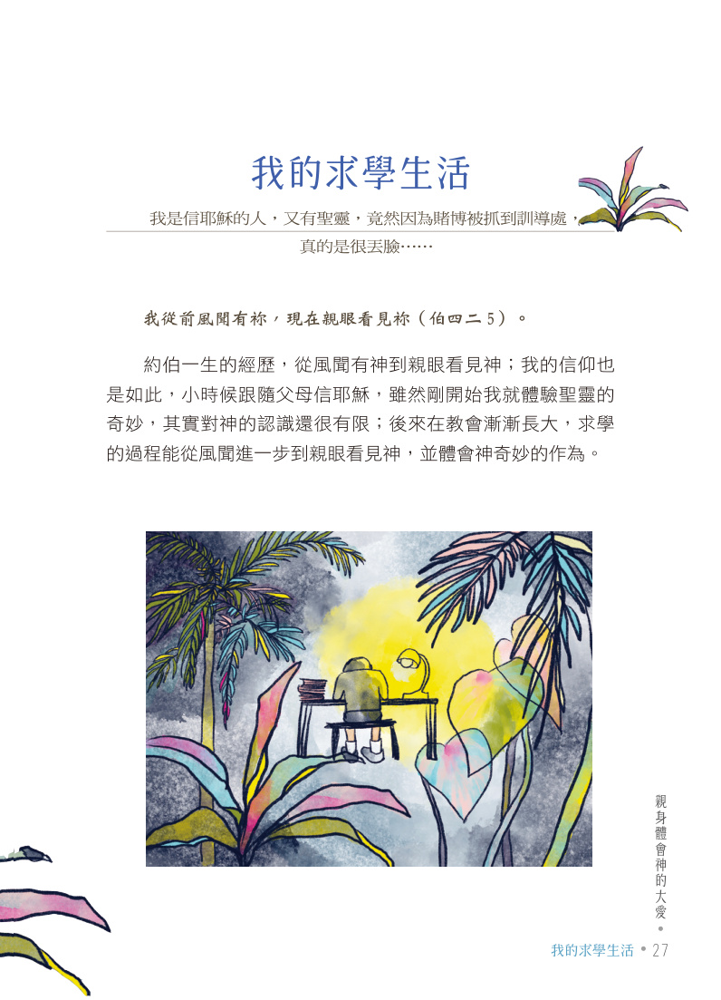
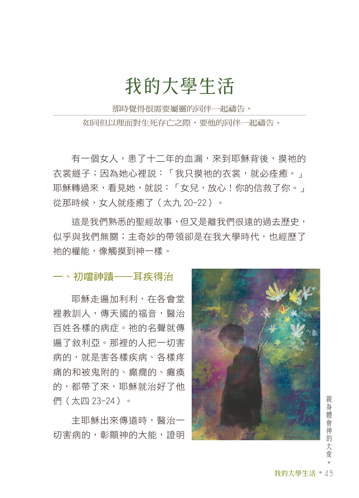
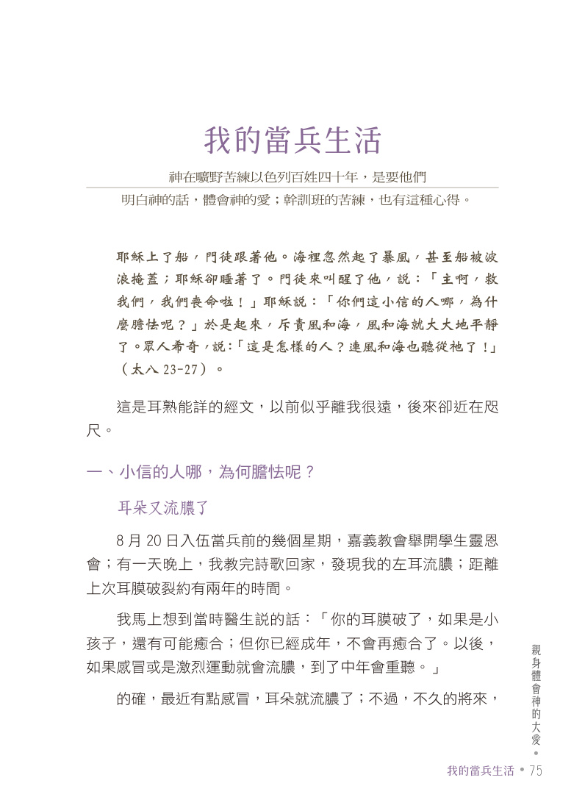
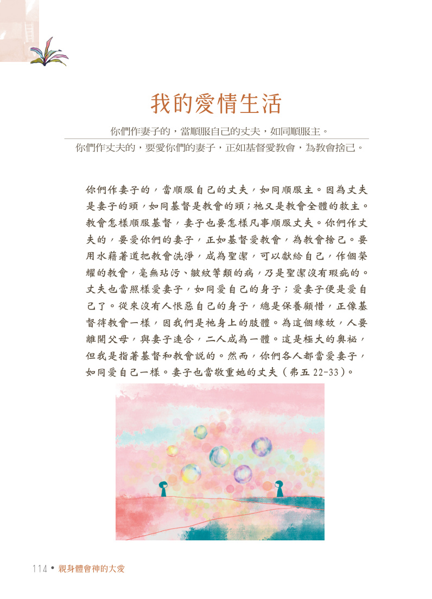

01
我的信仰啟蒙
親耳風聞神的事情
作者從嘉義農村的宗族聚落寫起，回到一家人如何在長兄病痛與無助中接觸福音。信仰不是突然降臨的口號，而是在真實困境裡，第一次聽見耶穌、第一次願意走進教會的生命轉折。
這一段讓讀者看見，神的帶領常常從一個家庭最需要盼望的時刻開始，也為後來整個人生道路埋下屬靈的起點。

Experiencing God's Great Love
在生命的旅程中，感受祂不變的愛
《親身體會神的大愛》是一位牧者回望一生時，向讀者交出的信仰見證。 羅真聲傳道從嘉義農村的成長背景寫起，記錄家庭如何因病痛走近福音，也寫自己在求學、服兵役、婚姻與事奉道路中，如何一步步經歷神的帶領。
限期優惠至 2026 年 9 月 30 日止

Book Concept
書中有神蹟，有眼淚，有青年時期的掙扎，也有婚姻生活中的磨合；這些經歷沒有被寫成遙遠的屬靈口號，反倒帶著生活的重量，使人看見信仰如何進入人的性情、家庭、選擇與一生道路。
Life Timeline
我的信仰啟蒙
作者從嘉義農村的宗族聚落寫起，回到一家人如何在長兄病痛與無助中接觸福音。信仰不是突然降臨的口號，而是在真實困境裡，第一次聽見耶穌、第一次願意走進教會的生命轉折。
這一段讓讀者看見，神的帶領常常從一個家庭最需要盼望的時刻開始，也為後來整個人生道路埋下屬靈的起點。

我的求學生活
從小跟著父母信主，並不代表立刻就深刻認識神。作者在求學過程裡，經歷跌倒、掙扎、升學與前途抉擇，才一步步從風聞有神，走到親眼看見神的作為。
神的帶領不只在聚會裡，也在考試、分發、人生方向與立志事奉的過程中逐漸顯明。

我的大學生活
大學時期是作者屬靈生命明顯轉深的一段時間。透過病痛、禱告、聚會與個人操練，他不再只是知道神，而是開始親自經歷主的醫治與同在，像親手摸到神的權能一樣真實。
這一段也使他獻身服事的心志越來越清楚，為往後的傳道道路預備了內在的根基。

我的當兵生活
當兵讓信仰進入最現實的操練場。環境壓力、群體生活、身體病痛與原則堅持，都讓作者在困難中學習不憑自己，而是在風浪中緊緊依靠主。
這不只是受苦的記錄，更是一段信心被磨練、性情被塑造的過程，也成為日後事奉的重要預備。

我的愛情生活
最後一段把視角帶進婚姻與愛情。作者坦白書寫夫妻之間的磨合、順服、對話與彼此相愛，也讓人看見婚姻中的愛若只靠個性，終究有限；惟有把難題帶到神面前，愛才能被重新整理。
因此，這本書最終所見證的，不只是神蹟與蒙恩，更是神的愛如何在最貼近日常的人生中留下溫柔而清楚的痕跡。

Letters Between Two Hearts
在愛情與婚姻的章節裡，最動人的不是完美無缺的答案，而是一封封誠實寫下的信。 道歉、等待、代禱、牽掛與重新靠近，都在紙上留下了信仰如何進入兩個人心裡的痕跡。
1977 年 3 月 7 日，我收到了這樣的信，心想，怎麼會這樣呢？ 一定出現了什麼問題。我沒有立刻用情緒回應，只拿著信閉目沉思。
我深深相信神已帶領我們經過三年多，其中的酸甜苦辣我們都嚐過了； 縱然有再多誤會、再多問題，本著一顆靠主的心，必能衝破難關。
她的回信只有短短幾行：「愈解愈亂，愈拉愈遠。請你不要再寄信， 因為我沒有勇氣看，而且更寫不出什麼……。」
這不是冷淡，而是痛苦到無法表達。她仍繼續寫信，只是不敢寄出； 好像把自己封閉起來，等著對方用憐恤而不是意氣去靠近。
想到為妳禱告，我才回想過去，似乎三年多從來未曾為妳禱告。 素來我似乎都將妳當成超人，視妳能應付惡劣的環境為理所當然。
殊不知，妳也是一個軟弱的女人，需要人扶持、照顧、體貼； 而我竟忽略了，讓妳一人在環境中掙扎也不在意。今後我願時時為妳代禱。
振聲：今天買飯回來，尚未十二點，郵差就投進來一封信，我知道那是你寄來的。 第一個意念，收到你的信我很高興；接著猶豫了起來。
手裡拿著厚厚的一封信，渴望的信卻沒有勇氣看。靜了一會兒之後， 我不放心將信擱著不看，就告訴自己，看了絕不准哭。
再說一句：對不起！深深地。這時候的確是越表達越亂，所以我也不再多寫什麼。 我決無視妳為「累贅」之意，也許那是因詞意表達不當而讓妳誤會了。
我知道妳現在最需要的就是冷靜的時刻。英！趕快投入神的懷抱裡。 我也不敢再急著要得到妳的回信，若寫不出什麼，就不要勉強。
她接到信後，心結全部化開，又如往常一樣將內在的心思毫無保留地表達出來。 那些原本說不出口的痛苦，終於在信裡被看見、被接住。
他再回信說：昨天午睡醒來，正有妳的一封信在等待著我。英！好高興哦！ 在拆信之前，我已深切地相信問題已解決了；立時，生命活現出光彩。
煎熬之際，有你同在為我禱告、唱詩、讀經，帶給我許多許多安慰。 然而我更知道，也有我靠主獨自作戰的時候，果然不錯。
雖然目前咳得喘不過氣，雖然我不知道神的旨意，但我永遠相信神的愛，神的能力。 求神操練我就好，孩子還太小太小，不要對她有不良影響。
英！在苦難的爐中才能熬煉出真正的信心，也才能發現實質的軟弱； 當我們能進一步面對軟弱之後，信心也才能隨之長進。
當然，熬煉是痛苦的，但為了靈程的長進，我們不祈求將這杯撤去， 僅求主在熬煉中加添信心、能力，使我們不致於支撐不起。
這本書談的其實不只是一位傳道人的過去，也是一個人如何被神的大愛慢慢牽引、修剪、安慰與成全。
C293
這本書適合給正在尋找信仰根基的人，也適合給走過婚姻、家庭、事奉壓力的弟兄姊妹。它讓人重新相信，神的愛並非只存在講台上，也能在人的一生裡留下清楚而溫柔的痕跡。